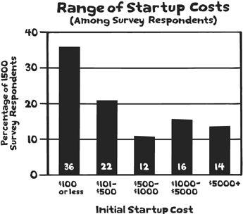

“Money is better than poverty,
if only for financial reasons.”
—WOODY ALLEN
Naomi Dunford was a teenage mother and a high-school dropout. By the time she was pregnant with her second child, she was living in a homeless shelter. After making it out of the shelter by working odd jobs, Naomi was determined to improve her circumstances however she could. Despite the obvious disadvantages—being a mom at age seventeen, leaving high school—she also had a few things going for her. Her dad had built several businesses from scratch, imparting knowledge and experience along the way. Her mom was a marketer. And back in the day, her grandfather was in advertising. In other words, marketing was in Naomi’s blood, so it wasn’t a huge stretch for her to imagine herself in a different life.
Without sharing her background with potential customers at first, Naomi opened a consulting company called IttyBiz. Tag line: “Marketing for businesses without marketing departments.” Later she would add products, courses, and referrals to other professionals, but Naomi started with a single consulting service: the service of brainstorming. Over the course of an hour and for an initial fee of $250, she would evaluate marketing ideas and provide feedback on ways to improve them. Nothing more, nothing less.
You might wonder how many people pay for this service (answer: a lot), and whether it’s worth it (answer: keep reading). Naomi is originally from London, Ontario, but I met her in London, England, where she was living near her mother. While riding the tube around the city and wandering through an outdoor clothing market, I asked for her advice on a situation in my business. She listened for two minutes and asked a few clarifying questions. Then, without much of a pause, she said, “Here’s what you should do,” and gave me a list of specific actions and ideas while I frantically wrote them down. I took her advice and spent a few hours applying it in my next project. As a result, I made at least $15,000 more over the next year because of her action list. (I didn’t pay Naomi’s fee of $250, but I hope she appreciates this extended testimonial.)
As she sharpened her message and connected with more people, the business grew. At the end of her first full year, Naomi published a short video explaining how she had earned almost $200,000 so far. This came as a big surprise to the online world, because Naomi wasn’t known very well—she wasn’t an Internet celebrity, she didn’t have a million followers—and in fact, a lot of people who stumbled upon her website were immediately turned off by the coarse language and her distinct “call it like I see it” style. Article titles included “What to Do When You’re Scared Shitless” and “Moral of the Story: Topless Edition (with Photos).” But Naomi’s audience wasn’t put off at all.
One of the things Naomi does well is continuously remind her clients about the need for actually making money. This may sound simple, but busy entrepreneurs can easily become overwhelmed with all kinds of projects and tasks that have nothing to do with making money. Putting the focus on income and cash flow—measuring everything else against those standards—ensures that a business remains healthy. Here’s how Naomi explains it:
Remember that the goal of business is profit. It’s not being liked, or having a huge social media presence, or having amazing products that nobody buys. It is not having a beautiful website, or perfectly crafted email newsletters, or an incredibly popular blog. In larger businesses, this is called accountability to shareholders. Business is not a popularity contest. The CEO doesn’t get away with saying, “But look at all these people who like us on Facebook!” Shareholders will not accept that. You are the majority shareholder in your business, and you have to protect your investment. You have to make sure that your recurring activities are as directly tied to making money as possible. There’s nothing wrong with having a hobby, but if you want to call it a business, you have to make money.
Naomi is right: On any given day, there are all kinds of things you can do that have nothing to do with making money—but you should be careful about those distractions, because without the money, there is no business. Many aspiring business owners make two common, related mistakes: thinking too much about where to get money to start their project and thinking too little about where the business income will come from. Fixing these problems (or avoiding them in the first place) requires a simple solution: Spend as little money as possible and make as much money as you can.
Inspired by her second child, Heather Allard invented two wearable baby blankets that became a worldwide sensation. The blankets were featured on Access Hollywood and sold in more than 200 stores, and it was all she could do to keep up. After the birth of her third child in 2006, Heather sold the products to a larger company in order to spend more time with the family. Success! She wasn’t done with entrepreneurship, though; the next step was to help other women, especially mothers, learn to do what she had accomplished. She started her next business, The Mogul Mom, with the goal of mentoring busy women who wanted to create more independence through a small business. The baby blanket business was highly successful, but it also became a high-spending operation as the product took off. On reflection, Heather realized that she would need to run her second act differently:
I had gotten into a ton of start-up debt with my product company and spent thousands on things that I absolutely did not need (big advertising campaigns, a custom e-commerce website, a publicist, etc.), and I definitely did not want to do that with The Mogul Mom. Therefore, when I spend money on The Mogul Mom, it’s for things that will continue to build my brand and boost my sales while allowing me ample time with my family—things like Web design, payments to a small group of contributors, or a new computer.
The distinction Heather points out at the end is important: She’s not reluctant to spend money on things that will (1) build her brand and (2) boost her sales. This kind of spending can grow a business. If you can spend $100 and create $200 in value from it, why wouldn’t you? It’s the other kind of spending—the unproven ad campaigns and unneeded custom websites—that Heather learned to stay away from. Lesson: Spend only on things that have a direct relationship to sales.
The stories from Naomi and Heather illustrate two important principles, both related to money. The first principle is that a business should always focus on profit. (Always remember, no money, no business.) The second principle is that borrowing money or investing a lot of money to start a business is completely optional.
This doesn’t mean that there are no examples of businesses that have done well through traditional methods; it just means that borrowing is no longer essential. Don’t think of it as a necessary evil; think of it as an undesirable option to be pursued only if you have a way to limit risk or are sure you know what you’re doing.
If you don’t know what you’re doing when you’re starting out, that’s OK, you’re in good company. Almost every entrepreneur pursues projects with a much-trial-and-much-error system. But since it’s easy to try things without losing your shirt, why seek investment and go into debt for something that may or may not work?
It’s completely possible to start on a very low budget without hindering the odds of success. Consider the reports of many in our study group:
• Chelly Vitry started a business as a tour guide for Denver food lovers, connecting them to restaurants and food producers. Startup costs: $28. Recent annual income: $60,000.
• Michael Trainer started a media production company for $2,500, the cost of a nice camera, which he later sold to recoup the cost in full. He then went on to work with two Nobel Prize winners: the Acumen fund and the Carter Center.
• Tara Gentile started her small publishing business for $80, hoping to earn enough money to be able to stay home with her daughter. One year later, she earned enough money ($75,000) that her husband could stay home as well.
• Chris Dunphy and Cherie Ve Ard started Technomadia, a software consultancy for health-care providers, for $125. The business now produces net income of more than $75,000 as Chris and Cherie travel the world.
• A former store designer for Starbucks, Charlie Pabst needed a $3,500 computer for his Seattle design business. But after he had the powerful machine and a $100 business license, he was good to go. Annual income: just under $100,000.
These stories are not outliers. When I began the research for this book, I received more than 1,500 nominations, with similar stories from all over the world. You can see the range of startup costs from our study group in the graph below. The average cost of the initial investment was $610.60.*

You might expect that certain types of businesses are easier to start with limited funds, and that is correct. It’s also the whole point: Since it’s so much easier to start a microbusiness, why do something different unless or until you know what you’re doing? Small is beautiful, and all things considered, small is often better.
Unconventional Fundraising from Kickstarter to Car Loans
What if you’ve thought it through and you do need to raise money somehow? Whenever possible, the best option is your own savings. You’ll be highly invested in the success of the project, and you won’t be in debt to anyone else. But if this isn’t possible, you can also consider “crowdraising” funds for your project through a service such as Kickstarter.com. Shannon Okey did this with a project to boost her craft publishing business. She asked for $5,000 and received $12,480 in twenty days thanks to a nice video and well-written copy.
Before going to the masses, Shannon went to her bank for a small loan. Her business was profitable and promising, with several new publications coming out over the next year. This wasn’t just any bank. It was a community bank in Ohio where she had an excellent personal and business relationship. Shannon was a meticulous bookkeeper with a conservative attitude toward finances; she brought along detailed sales figures and a clear plan to repay the money. Unfortunately, when she mentioned “craft publishing,” she was dead in the water. “They looked at me like I was a silly, silly woman who couldn’t possibly know anything about running a business,” she said.
The rejection turned into an opportunity. Taking the project on Kickstarter generated both funds and widespread interest in the project. Nearly three hundred backers came through with donations ranging from $10 to $500, leaving the project fully funded with capital to spare. Oh, and Shannon was not one for going quietly. After she reached the $10,000 level in her Kickstarter campaign, she printed out the front page of the site, wrapped the page around a lollipop, and sent it off to the bank’s underwriters. “I think they got the message,” she says.
As I collected stories for the book, I was mostly interested in people who avoided debt completely. But I did hear two fun stories about borrowing money that I thought were worth sharing. On a flight from Hong Kong to London, Emma Reynolds and her future business partner Bruce Morton had an idea for a consultancy that would work with big companies to improve their staffing and resourcing. They calculated that they would need at least $17,000 to start the new firm. There was just one problem … or actually, two: Emma was twenty-three and unlikely to get a business loan, and Bruce was going through a divorce and would also be a poor candidate for a business loan. Somewhere during the twelve-hour flight, one of them realized that although they couldn’t get a business loan, they could probably get a car loan.
Bruce proceeded to do just that, borrowing $17,000 for a car and then investing the funds in the business with Emma instead. They paid back the car loan within ten months, and the bank never found out that there was no actual car. Now the firm employs twenty people, is highly profitable, and has multiple offices in four countries.†
Finally, here’s a fun story from Kristin McNamara, who started a California gym specializing in climbing:
To fund the latest incarnation of the gym, we called upon the community to “invest” in us, much like a three-year CD. We offered 3 percent above prime, which is more than you could get then or now, and people I’ve never even seen at the facility came up with the cash to get it started. My partner and I, the founders, are the only paid full-time staff, and we just hired someone to manage the volunteers for us for a small stipend. Our community fundraising project brought in $80,000.
As these lessons in improvisation show, if you need to raise money, there’s more than one way to do it.